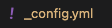
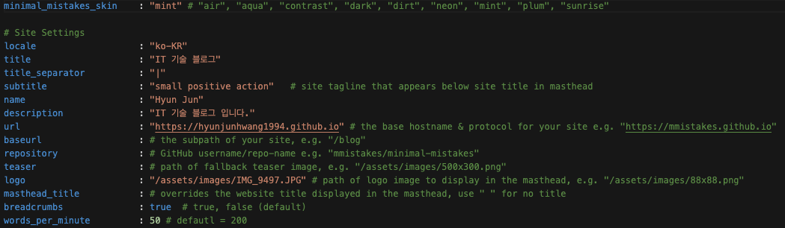
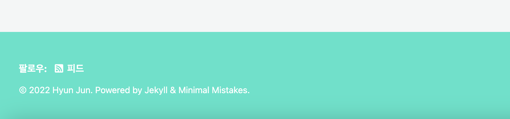
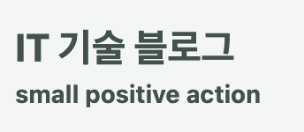
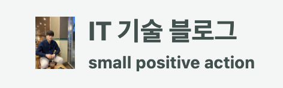
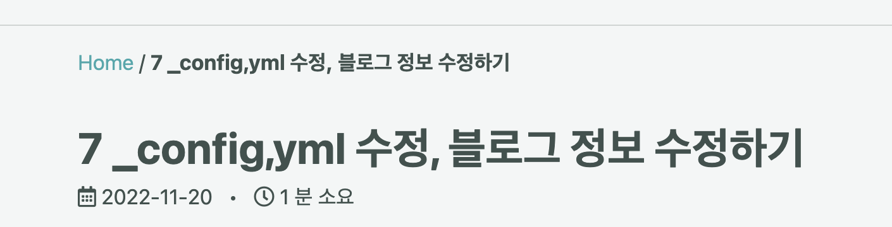
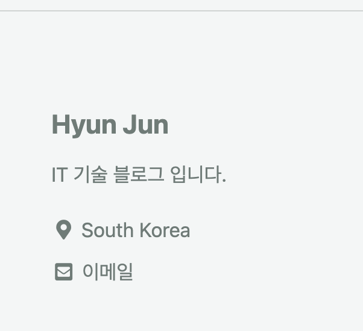
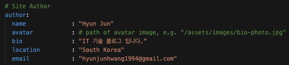
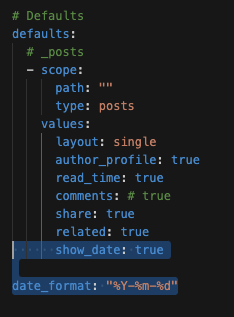
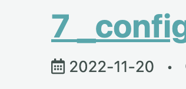

_config,yml 수정, 블로그 정보 수정하기
- 2021, 맥북 프로 M1 Pro 14인치 모델
- Ventura 13.1
_config.yml?
_config.yml은 Jekyll 블로그 생성시 만들어지는 파일로
여러가지 블로그 관련 정보를 설정 할 수 있다.

스킨 선택
minimal_mistakes_skin : 설정 하고싶은 스킨을 선택해 보자.

Mint를 선택 할 경우

언어 변경
locale : “ko-KR” 할 경우 여러가지 설정된 언어가 영어에서 한글로 바뀐다.
예를들면 위에 팔로우: 피드 이런부분!
title 변경
title : “IT 기술 블로그”
title_separator : “|”
subtitle : “small positive action”
아래 메인 부분과, 인터넷브라우저 창의 제목, 구분자가 바뀐다.

메타 정보 수정
아래 부분은 메타정보에만 들어가므로 바꿔도 아무런 변경이 일어나지 않는다.
name : “Hyun Jun”
description : “IT 기술 블로그 입니다.”
로고 사진 추가
assets -> images에 사진을 넣고
logo : “/assets/images/IMG…” 에 추가해주면 대문에 자기 사진이나온다.

Breadcrumbs 링크 생성
breadcrumbs : true 할 경우 포스팅을 눌럿을 때 Home으로 이동할 수 있는 링크가 생김.

글 읽는데 걸리는 시간 표시
words_per_minute : 50
글마다 읽을때 몇분 소요되는지 기록이되는데,
아마 50으로 해놓으면 50글자가 넘어갈때마다 1분이 추가 되는것 같음.
Site author
실질적으로 아래 영역의 경우

맨처음 Site settings 부분이 아닌!
아래의 Site Author 부분에서 변경해야 적용된다.

show_date, date_formate을 저렇게 설정해 줄경우

포스트에 아래처럼 작성 날짜가 나온다.

그외에 주석으로 되어있거나 여러 부분들은 아래 가이드링크 참조하여 직접 테스트 해보세요.
Minimal-mistakes 가이드 문서